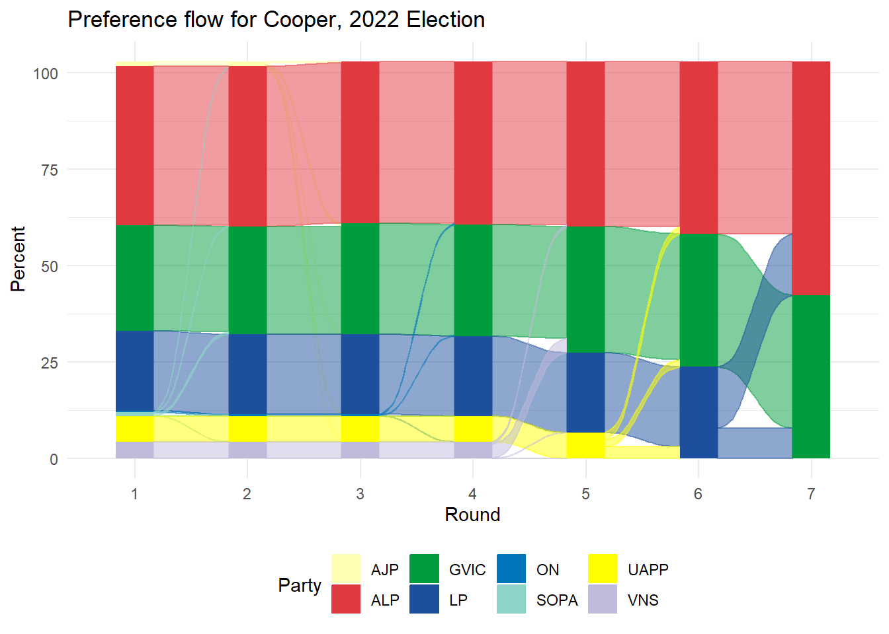

Analysing Australian Electoral Results
26 June 2023
1 Introduction
The start of the 21st century has come with significant disruption across the world. Although it may sound cliché, the end of the post-war order has come with many challenges: the growing effects of climate change, global recessions, and a pandemic. Additionally, improved quality of life has brought both longer life expectancy and decreased birth rates across the world. All these changes have impacted the political systems and conventions of the 20th century. Uncertainty about the future has proven fertile ground for populist movements. Longer lifespans mean that the post-war generation (Baby Boomers) are still active in political life as many of them enter their 8th decade, worrying about keeping the lifestyle as they age. On the other hand ‘young’ Millenials reach their forties with uncertain prospects due to climate change and their apparent inability to reach the same level of wealth as their parents.
In Australia, the last decade of political life has been marked by these issues, which have been contentious points across both the political divide and within the major parties that have dominated in politics for much of the past century. Political narrative (from the media and politicians) tend to characterise this issues in terms of conflict between different population groups (stoic Baby Boomers vs. Millenials, inner-city “lefties” vs. “real Australia”, southern vs. northern states). As many of these perceived issues can be described in demographic terms, it is of interest to analyse how demographic factors may or may not affect political choices.
1.1 A brief introduction to Australia’s political system
The Commonwealth of Australia is a federal, constitutional monarchy. At a federal level, the political system consists of multi-party parliamentary democracy. This system is modelled after the Westminster institutions, with a two-chamber legislature. Like the UK Parliament, the lower chamber (House of Representatives) is composed of elected members, each being the sole representative of one geographical area (a Commonwealth Electoral Division or CED, also referred to as an electorate or a division). The number of and geographical extent of each electorate is determined by the Australian Electoral Commission - an independent body - following constitutional provisions. Although frequent boundary reviews are conducted to guarantee equal representation per citizen, in practice electorate rolls range between 72,345 and 138,836 voters, due to great population densities across the country and to ensure minimum representation for each state/territory, as enshrined in the Constitution.
Similarly to other Westminster systems, the leader of the party or Coalition with the largest number of elected representatives (Members of Parliament or MPs) gets invited by the Governor General (as representative of the Australian monarch) to form the executive branch (the Government). The second majority is formally designed “The Opposition”, while all remaining MPs are known as “the crossbench”.
In terms of the electoral system, voting is compulsory for all Australian citizens living in the country. Registration is automatic upon turning 18 years old or becoming a citizen, based on place of residence. Both failing to update enrolment details and failing that vote attract fines - which are enforced. Participation rates usually range above 90%.
MPs are elected using a preferential voting system. Voters must rank candidates in order of preference (with 1 being the preferred candidate, 2 their second choice and so on). When tallying up the results, the below process is followed:
Votes are tallied based on first preferences - which are known as the primary vote.
Results are organised by the number of votes. If a candidate obtains an absolute majority (i.e. one vote above half of the valid ballots), they are declared the winner.
If no candidate reaches the absolute majority, the ballots from the candidate with the lowest number of votes are taken aside and redistributed to the other candidate based on the second preference.
Votes are tallied again, and the process is repeated (based on each ballot’s next preference) until a candidate obtains over 50% of the votes.
A graphical example of preference flows for the Division of Indi is presented in figure ??.

1.2 Australian Political landscape
Although a multi-party system in theory, Australian politics have operated as a de facto two-party system through most of the Federation’s history - traditionally a labour-aligned and an opposing party. Nowadays the landscape is composed of two major forces (“parties of government”) and a number of smaller groups, namely:
The Australian Labor Party (ALP) is the oldest in the system. As its name suggests, the party’s origin is in the labour movement from the late Victorian era. This is a left-of-centre party and it is made up of two official factions: the centrist “Right Faction” (historically associated with some migrant communities and Catholic Social Teachings) and a “Left Faction” (with socialist roots). The party membership is comprised both of individuals and unions.
The Coalition (COAL) is a grouping of two federal right-of-centre parties(fused in two states). The largest and leading party is the Liberal Party (LIB/LP), founded in the 1940s by Australia’s longest-serving Prime Minister, Sir Robert Menzies. Historically has served as a “big tent” organisation, agglutinating classically liberal and conservative groups. The second party in the coalition is the National Party (NAT), which is a conservative party representing rural constituencies. At a federal level, this a permanent coalition - when elected the Liberal leader becomes the Prime Minister with the National leader serving as deputy.
The Australian Greens (GRN) is considered the largest of the “minor parties”. One of the oldest green parties in the world, they are described as a left-wing, progressive party with a focus on environmental policies. On the political spectrum, they are perceived as being to the left of Labor.
Minor right-wing parties like One Nation and United Australian Party (UAP), Fishers and Shooters, etc. Most of them are perceived as further right than then then Coalition and mostly without parliamentary representation except One Nation and UAP, which have some support in rural areas, especially in North South Wales and Queensland.
Minor left-wing parties, like Socialist Alternative and Socialist Alliance. None of these parties has ever attained federal political representation.
Independents, which traditionally have not fit into the classical political spectrum. Historically independents didn’t have common positions, which changed in the last election with the arrival to Parliament of centrist “Teal” independents.
1.3 Problem statement and research questions
As expected, general political knowledge has mapped distinct audiences to each group. According to this working-class people vote Labor, wealthy professionals and business owners are inclined to the Liberal Party, farmers prefer the Nationals and an inner city, young liberal population vote for the Green. Political science also postulates that people become more conservative with age and as they accumulate wealth. However, global and local events in the last 10 years have shifted some of those political narratives. In particular, in Australia both major parties have experienced internal friction when defining their policies towards climate change (an issue resonating with urban electorates and with growing effects in Australia but contentious with some businesses and unions involved in Coal and Gas exporting sector), housing (rising prices due, partly influenced by policies favouring the real estate market as an investment mechanism). According to the media, political commentary and the same parties, this has shifted traditional voting patterns where:
There is an increasing divide between wealthy inner metropolitan areas, the suburbs, and regional and rural populations. In this divide, inner metropolitan areas seem to favour left-wing parties, and rural areas are conservative, leaving suburbs as the middle ground where economic issues are relevant. People are not shifting to conservative positions with age. In particular, Millennials are not voting for the Coalition due to climate policies and being locked out of the housing market. According to this, their vote is captured by either Labor or the Greens. Voters from historically Liberal (Party) wealthy, and classically liberal (as in liberalism) electorates (so-called “little l Liberals”) are dissatisfied with the Coalition’s perceived conservative turn, especially when it comes to climate change and positions on “moral issues”. In this narrative, these voters have supported the rise of the “Teal” movement (environmentally progressive, socially liberal, economically conservative/moderate).
Another aspect usually considered in political analysis is the influence of ethnically diverse voters. Being a “migration nation” and with roughly half of the population being a migrant or a child of at least one migrant, culturally diverse communities are perceived as relevant political audiences.
Within this context, this project attempts to study how population make-up may influence how Australian citizens may vote for a particular party. Specifically, the project will look into the following questions:
- Is there a demographic divide between the inner city and suburbia?
- What are the main demographic factors influencing political persuasion?
This then will be used to examine some common political narratives against the 2022 election results, such as:
- Was the so-called “Teal Wave” supported by discontent moderate Liberal voters?
- Are Millenials not becoming more conservative as they Age?
- Is culturally diverse voting relevant?
This project does not aim to develop a forecast tool. A naive retrospective forecast of the recent 2022 is included in this report, however it is intention is to validate primary voting drivers. On the same line, this project does not consider the problem of forecasting the actual winner of each election, which can be defined as a different topic altogether.